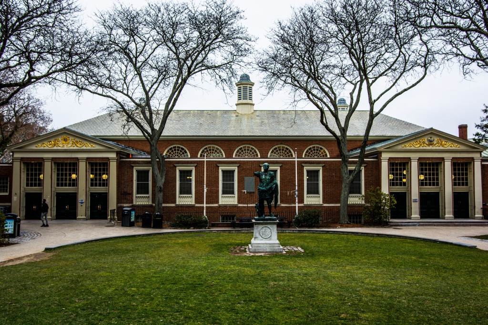

Take this short quiz to see where you should eat today!
New to Brown? Or just haven't tried out all the ~amazing~ dining halls or cafes on campus yet? No worries! That's what we're here for - check out the map for help locating our beloved dineries.
Have you ever spent 20 minutes scrolling through the Brown Dining app and filtering through menus trying to find a place to eat, just to then spend another 20 minutes finding someone to go with you?
It sucks! We know, which is why we created Love @ the Ratty. Love @ the Ratty takes the trouble out of deciding where to eat and who to eat with. Simply use your email to create an account and fill out the preferences survey on what you like to eat and when. Once your results are calculated, either choose to invite friends or meet up with others with the same results!
